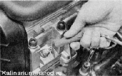
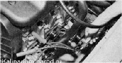
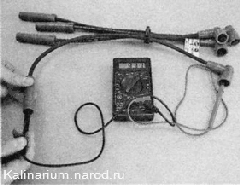

Высоковольтные провода- проверка и заменаДля выполнения проверки потребуется мультиметр. Совет Чтобы не перепутать выводы на катушке зажигания ( модуле зажигания), высоковольтные провода удобнее менять поочередно. Последовательность выполнения 1. Подготавливаем автомобиль к выполнению операции. 2. Отсоединяем высоковольтные провода от свечей зажигания. 
3. Отсоединяем наконечники высоковольтных проводов от катушки (модуля) зажигания. 
4. Мультиметром (и режиме омметра) измеряем сопротивление проводов. 5. У исправных проводов сопротивление (в зависимости от длины) должно быть в пределах 3,5—10,0 кОм. Заменять высоковольтные провода следует комплектом. 6. Подсоединяем провода к свечам зажигания и катушке зажигания в соответствии с порядковыми номерами цилиндров, нанесенными на провода и на катушку зажигания. Подсоединять провода к катушке зажигания необходимо только в соответствии с порядковым номером цилиндра. На изоляции проводов нанесена маркировка - порядковый номер цилиндра. |